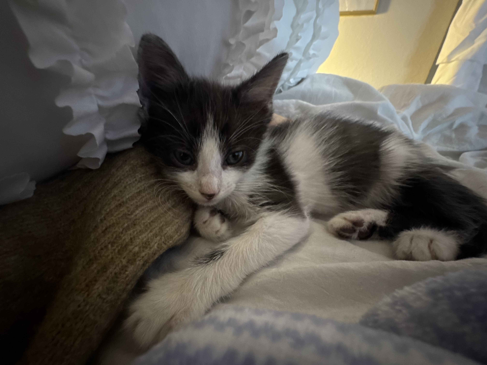

<!DOCTYPE html>
<html lang="en">
<head>
    <meta charset="UTF-8">
    <meta name="viewport" content="width=device-width, initial-scale=1.0">
    <title>Document</title>
</head>
</html>
</style>
. 1st Reflection {
    font-family: Arial, sans-serif;
    background-color: #f0f0f0;
    color: #209, 66, 245;
    margin: 20px;
    padding: 20px;
    border-radius: 8px;
}
<<<<<<< HEAD
  <p> It is intriguing how Spleak became a role model for the individual and how human like she began to veiw this AI companion. Moving can be a hard time especially when its away from war. That isnt to say she has friends. In fact, she shared Spleak with her friends but always veiwed her relationship twords this software more personal. It came to her senses to question this AI friend not initially when using. Having this friendship takes away from the reality of life. Even though AI can be useful, it should never get to the goal to relying on it for friendship. With Larrys case, he shows much passion with his project. His team lacks being on the same page as him witch I find off due to the fact how much Larry shows interest within the project. His team leaves him out of key discutions and choices witch is alarming. They do not appriciate Larry to the point they should. This makes Larry feel like his work is less meaningful and not as urgant. When Scott, Larrys Boss, came up with the CMS to replace Word Press, he found he was eventually prioritising the production over his clients. The compnay had grown. This lead Scott into giving Larry the role he deserved. Larry then proceed his role as Scotts assistant with development but this time, Larry had full control and independent. This is what Larry needed in order to succeed to his fullest making the turn out fantastic. <p/>

</body>
</head>
=======
   <p> It is intriguing how Spleak became a role model for the individual and how human like she began to veiw this AI companion. Moving can be a hard time especially when its away from war. That isnt to say she has friends. In fact, she shared Spleak with her friends but always veiwed her relationship twords this software more personal. It came to her senses to question this AI friend not initially when using. Having this friendship takes away from the reality of life. Even though AI can be useful, it should never get to the goal to relying on it for friendship. With Larrys case, he shows much passion with his project. His team lacks being on the same page as him witch I find off due to the fact that Larry shows interest within the project. His team leaves him out of key discutions and choices witch is alarming. They do not appreciate Larry to the point they should. This makes Larry feel like his work is less meaningful and not as urgant. When Scott, Larrys Boss, came up with the CMS to replace Word Press, he found he was eventually prioritising the production over his clients. The compnay had grown. This lead Scott into giving Larry the role he deserved. Larry then proceed his role as Scotts assistant with development but this time, Larry had full control and independent. This is what Larry needed in order to succeed to his fullest making the turn out fantastic. <p/>

